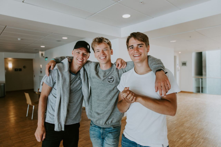

Who am I?
I'm glad you asked. I'm a 24 year old aspiring developer currently living in Hannover, Germany. I love everything code, and I am very passionate to learn and do the best job that I can on any project that comes my way.
Skills
during my time at Red River College, and as a self taught programmer I have accumulated a wealth of skills that I'm very proud of. Just to name a few I am proficient in HTML, CSS, and Javascript and I love building websites, I also am proficient in C#, and have done native Windows development. I also have experience with Databases, specifically writing queries with complex constraints to create, delete and modify large datasets in PostgreSQL, and Microsoft SQL Server. I also have improved my soft skills such as communication, problem solving, creativity, attention to detail, etc.
Why the Suits?
Turns out, I'm usually not very photogenic, and two of the three good photos I could find of myself are from the few times I've worn a suit. I don't have a weird obsession with suits if that's what you are wondering.
